print("Questo è un esempio di soluzione")[1] "Questo è un esempio di soluzione"
{ggplot2} a partire da un data frame, mappando le variabili alle estetiche con aes()geom_ adatto al tipo di variabili e combinare più livelli nello stesso graficoggsave()Questo esercizio è progettato per essere una guida e per aiutarti a completarlo in autonomia. Ti consigliamo fortemente di provare a eseguire il codice prima di guardare le soluzioni. Per aiutarti, abbiamo incluso in alcuni punti dei suggerimenti che possono indirizzarti nella direzione giusta. Li troverai così:
Clicca per leggere un suggerimento
Questo è un suggerimento.
Le soluzioni, invece, avranno questo aspetto:
Clicca per vedere la soluzione (provaci da solo prima!)
print("Questo è un esempio di soluzione")[1] "Questo è un esempio di soluzione"Durante l’esercizio troverai anche domande a risposta multipla, che servono a verificare se stai seguendo correttamente lo svolgimento. Le domande saranno simili a questa:
Lungo il modulo troverai anche due tipi di riquadri colorati. I riquadri gialli segnalano errori frequenti o punti in cui R si comporta in modo inatteso: leggili sempre, perché possono farti risparmiare tempo.
I riquadri verdi contengono invece approfondimenti facoltativi, per chi vuole andare un po’ oltre: puoi saltarli senza perdere il filo dell’esercizio e tornarci in un secondo momento.
Ti consigliamo di provare comunque a rispondere e a eseguire il codice da solo prima di consultare suggerimenti e soluzioni: è così che si impara davvero a usare R.
Oggi inizierai uno script nuovo, dedicato ai grafici, su cui lavorerai anche nel pomeriggio (Modulo 6) e domani pomeriggio (Modulo 8). Apri il progetto del corso, crea un nuovo script (File -> New File -> R Script) e salvalo nella cartella script con il nome plot.
Come nei moduli precedenti, inizia lo script con alcuni commenti: nome e cognome, obiettivo dello script, email e data. Poi crea la sezione “Caricamento pacchetti” con la combinazione di tasti Ctrl + Shift + R (Cmd + Shift + R su Mac) e copiaci il comando pacman::p_load() dello script tabelle_grouping.R. Eseguilo.
Ricordati di salvare il lavoro di tanto in tanto (Ctrl + S, oppure Cmd + S su Mac). Al termine dell’esercitazione non chiudere il progetto R: nel pomeriggio continuerai a lavorare su questo script.
Da qui comincia l’esercitazione.
Come nel Modulo 4, usiamo i dati puliti preparati da noi. Nello script crea la sezione “Importazione dati” (Ctrl+Shift+R) e importa con import() il file dati_clean.rds della cartella dati, chiamando il dataset dati_clean.
Clicca per vedere la soluzione (provaci da solo prima!)
# Importazione dati -------------------------------------------------------
dati_clean <- import("materiali_corso_R/dati/dati_clean.rds")I dati su cui stiamo lavorando (dati_clean) è la coorte di persone vaccinate contro COVID-19 che ci accompagna in tutto il corso, con persone con HIV (hiv_status uguale a 1) e persone senza HIV (hiv_status uguale a 0). Le persone senza HIV non sono state scelte a caso: per ogni persona con HIV sono state scelte, di norma, due persone senza HIV con la stessa regione (region), lo stesso sesso (sex), la stessa classe d’età (age_group, 18-59 o 60+) e la vaccinazione nella stessa settimana. Questo procedimento si chiama appaiamento: la persona con HIV e i suoi due “controlli” hanno lo stesso valore della variabile group. Per questo nella coorte le persone senza HIV sono circa il doppio di quelle con HIV. Ci servirà per leggere alcuni grafici.
Anche in questo modulo userai l’“Area di prova” come fatto per i moduli precedenti. Quasi tutti i grafici di oggi sono prove, che non serve conservare. Come nei moduli precedenti, aggiungi in fondo allo script una nuova sezione, “Area di prova” (Ctrl + Shift + R), e fai lì gli esercizi. Nello script, sopra l’area di prova, scriverai solo gli oggetti che servono anche dopo: lo segnaleremo di volta in volta.
{ggplot2}In questo modulo farai i grafici con il pacchetto {ggplot2}. Non devi caricarlo: fa parte del {tidyverse}, che hai già caricato all’inizio dello script.
Con {ggplot2} un grafico si costruisce un pezzo alla volta, come una serie di strati sovrapposti. Ogni grafico comincia con la funzione ggplot(), che ha due argomenti principali:
data =, il data frame da cui prendere i dati;mapping = aes(), dove indichi quale variabile va su ciascun elemento del grafico. aes() sta per aesthetics, “estetiche”: l’asse x, l’asse y e, come vedremo, anche il colore o il riempimento. Associare una variabile a un’estetica si dice mappare.ggplot(data = DATI, mapping = aes(x = VARIABILE, y = VARIABILE))Proviamo nell’area di prova: scrivi un comando ggplot() con i dati dati_clean, mappando la regione (region) sull’asse x e l’età (age) sull’asse y.
Clicca per leggere un suggerimento
Il mapping si scrive dentro aes(), assegnato all’argomento mapping = di ggplot().
Clicca per vedere la soluzione (provaci da solo prima!)
ggplot(data = dati_clean, mapping = aes(x = region, y = age))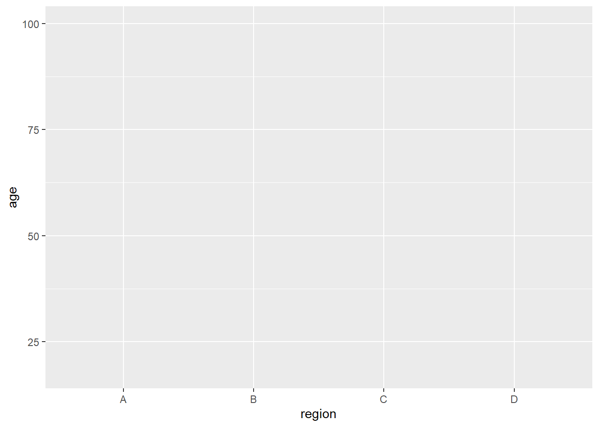
ggplot() ha preparato la “tela” con gli assi. Per disegnare i dati bisogna aggiungere un livello con una funzione che inizia con geom_: ogni funzione geom_ disegna i dati in un modo diverso. geom_point(), per esempio, disegna un punto per ogni riga del data frame.
ggplot(data = DATI, mapping = aes(x = VARIABILE, y = VARIABILE)) +
geom_point()In dati_clean c’è anche il livello di anticorpi di ciascuna persona dopo la vaccinazione (anticorpi). Nell’area di prova, scrivi un nuovo comando ggplot() con lo stato HIV (hiv) sull’asse x e il livello di anticorpi (anticorpi) sull’asse y, e aggiungi un livello geom_point(). Il simbolo + serve a collegare più strati (layers) del grafico: ogni strato si aggiunge sopra il precedente.
Clicca per vedere la soluzione (provaci da solo prima!)
ggplot(data = dati_clean, mapping = aes(x = hiv, y = anticorpi)) +
geom_point()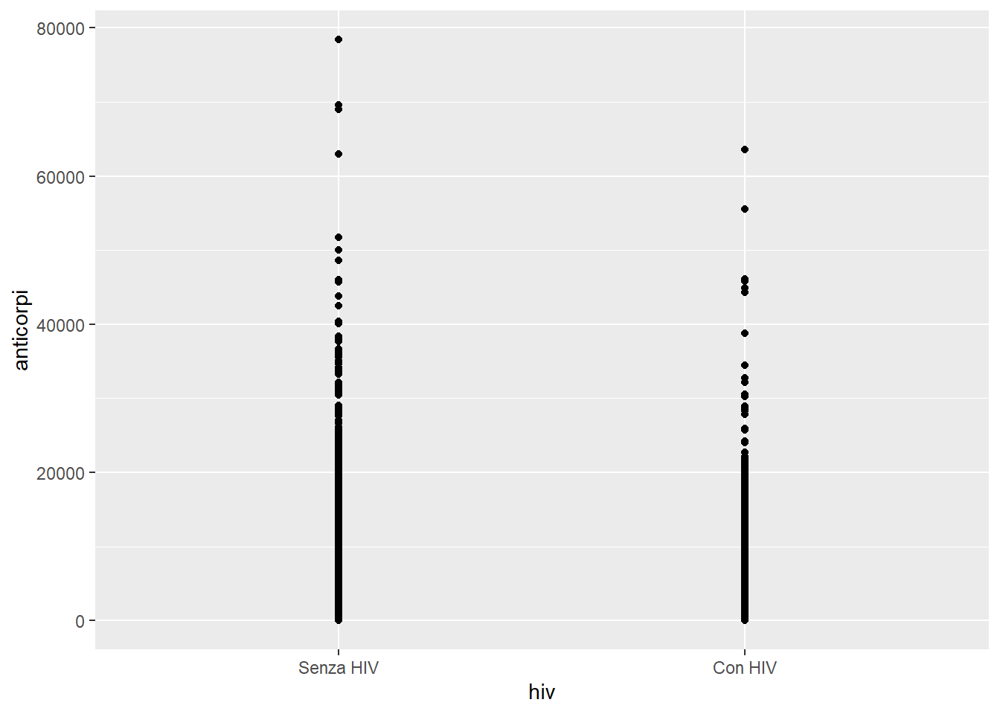
+Il + va scritto alla fine della riga, non all’inizio di quella successiva. Prova a spostarlo all’inizio della seconda riga ed esegui le due righe.
Clicca per vedere la soluzione (provaci da solo prima!)
# sbagliato: il + è all'inizio della seconda riga
ggplot(data = dati_clean, mapping = aes(x = hiv, y = anticorpi))
+ geom_point()Nel grafico con geom_point() molti punti sono uno sopra l’altro: sull’asse x ci sono solo due gruppi (“Senza HIV” e “Con HIV”), quindi tutte le persone di un gruppo finiscono sulla stessa linea verticale, e quelle con livelli di anticorpi simili si coprono a vicenda. geom_jitter() disegna gli stessi punti, ma sposta ciascuno di poco, a caso, così che non si coprano a vicenda.
Nell’area di prova, sostituisci geom_point() con geom_jitter(). Poi apri l’help (?geom_jitter) e leggi le sezioni Description e Aesthetics.
Clicca per vedere la soluzione (provaci da solo prima!)
ggplot(data = dati_clean, mapping = aes(x = hiv, y = anticorpi)) +
geom_jitter()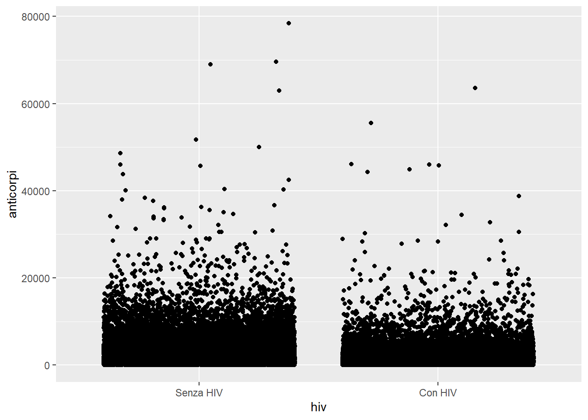
Nella sezione Aesthetics hai visto che i punti hanno anche un colore (color), una dimensione (size) e una forma (shape). Se vuoi che tutti i punti abbiano lo stesso colore o la stessa dimensione, scrivi l’argomento dentro la funzione geom_ con un valore fisso: queste si chiamano estetiche statiche. Con geom_jitter() puoi anche decidere di quanto spostare i punti in orizzontale, con l’argomento width.
Ora, nell’area di prova, dentro geom_jitter(), prova uno alla volta questi argomenti: width = 0.2, color = "darkred", size = 3, shape = 4. Infine, uniscili nello stesso grafico separandoli con una virgola.
Clicca per vedere la soluzione (provaci da solo prima!)
# width
ggplot(data = dati_clean, mapping = aes(x = hiv, y = anticorpi)) +
geom_jitter(width = 0.2)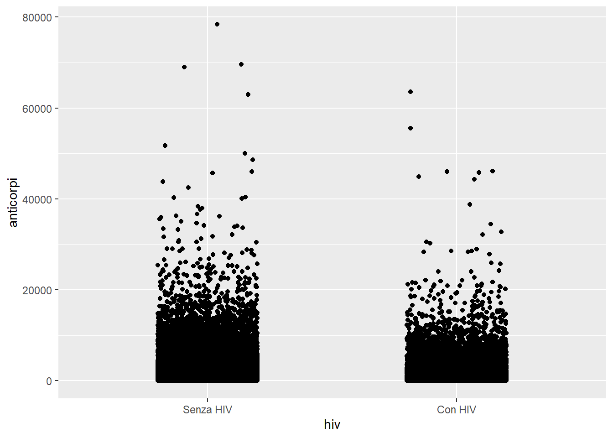
# color
ggplot(data = dati_clean, mapping = aes(x = hiv, y = anticorpi)) +
geom_jitter(color = "darkred")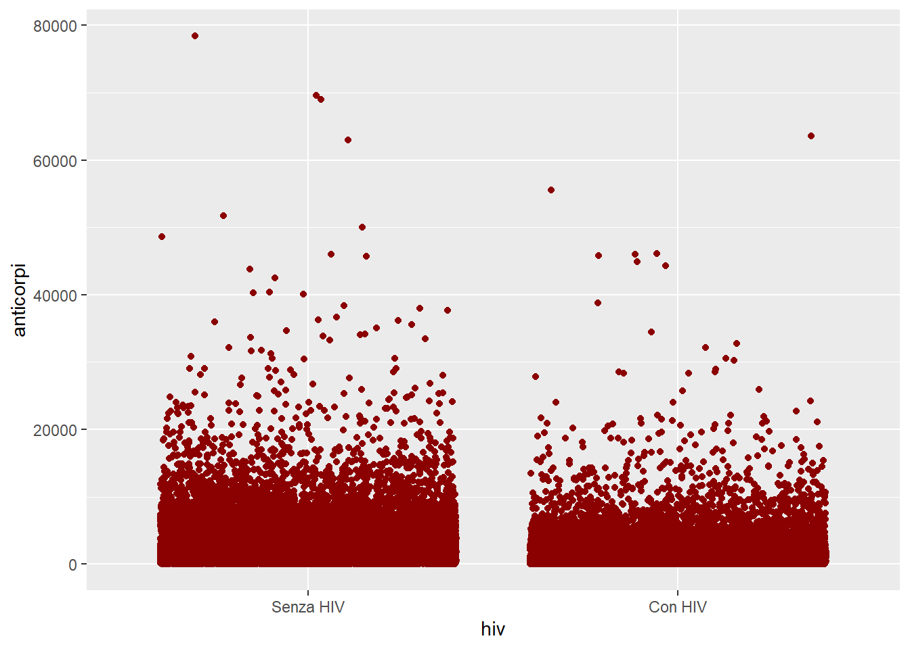
# size
ggplot(data = dati_clean, mapping = aes(x = hiv, y = anticorpi)) +
geom_jitter(size = 3)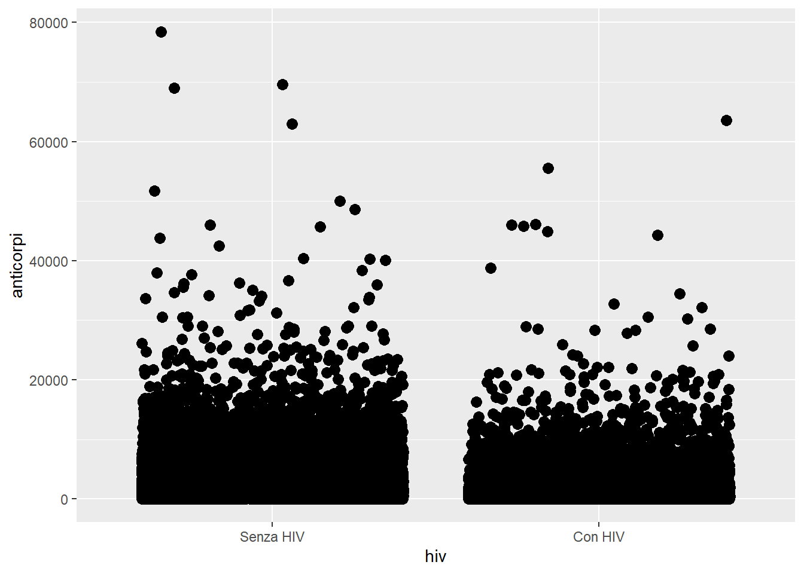
# shape
ggplot(data = dati_clean, mapping = aes(x = hiv, y = anticorpi)) +
geom_jitter(shape = 4)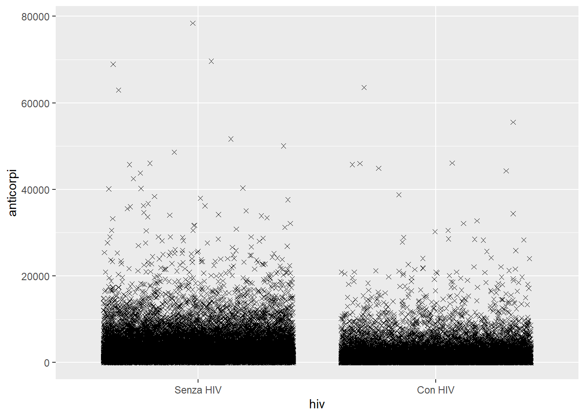
# width, color, size, shape
ggplot(data = dati_clean, mapping = aes(x = hiv, y = anticorpi)) +
geom_jitter(width = 0.2, color = "darkred", size = 3, shape = 4)Per confrontare una variabile continua tra gruppi, come l’età tra le regioni, si usa spesso geom_boxplot(), che per ogni gruppo disegna una “scatola”: la linea centrale è la mediana, i bordi della scatola sono il primo e il terzo quartile, le linee che escono dalla scatola (i “baffi”) arrivano fino ai valori più estremi che non distano più di 1,5 volte l’altezza della scatola, e i punti isolati oltre i baffi sono i valori anomali (outlier).
Torna ora al grafico dell’età per regione, quello con cui hai aperto la tela all’inizio del modulo (x = region, y = age). Nell’area di prova, riscrivi quel comando ggplot() e aggiungi un livello geom_boxplot().
Clicca per vedere la soluzione (provaci da solo prima!)
ggplot(data = dati_clean, mapping = aes(x = region, y = age)) +
geom_boxplot()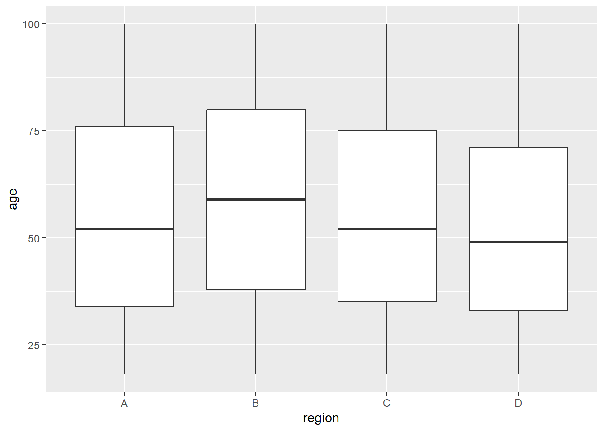
Il riempimento delle forme che hanno un’area (boxplot, barre, istogrammi) si regola con l’estetica fill. Finora hai dato alle estetiche un valore fisso. Puoi anche farle dipendere da una variabile, per esempio dare ai boxplot un riempimento diverso per ogni regione: queste si chiamano estetiche dinamiche e, come x e y, si scrivono dentro aes(). {ggplot2} sceglie da solo un colore per ogni valore e aggiunge la legenda.
Nell’area di prova, rifai il boxplot riempiendo tutte le scatole di "steelblue".
Clicca per vedere la soluzione (provaci da solo prima!)
ggplot(data = dati_clean, mapping = aes(x = region, y = age)) +
geom_boxplot(fill = "steelblue")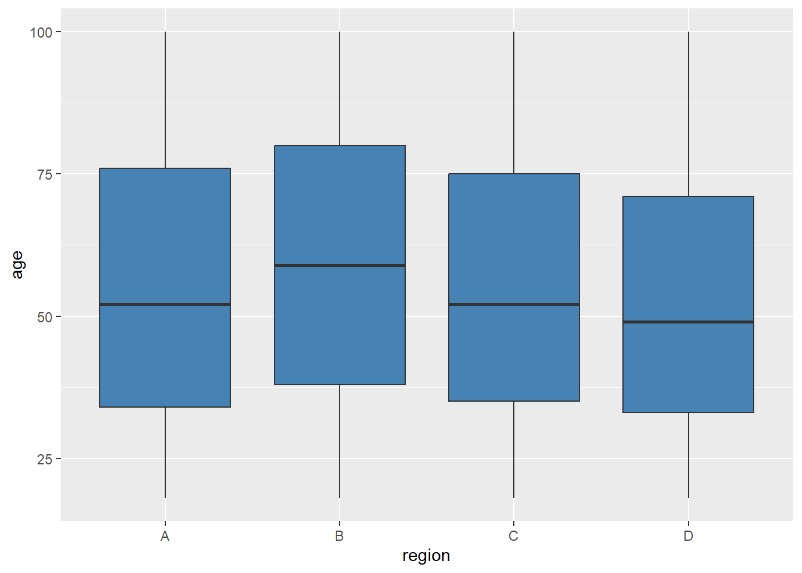
Poi modifica il comando in modo che il riempimento dei boxplot vari per regione.
Clicca per leggere un suggerimento
Un’estetica che dipende da una variabile va scritta dentro aes(), con il nome della variabile senza virgolette.
Clicca per vedere la soluzione (provaci da solo prima!)
ggplot(data = dati_clean, mapping = aes(x = region, y = age, fill = region)) +
geom_boxplot()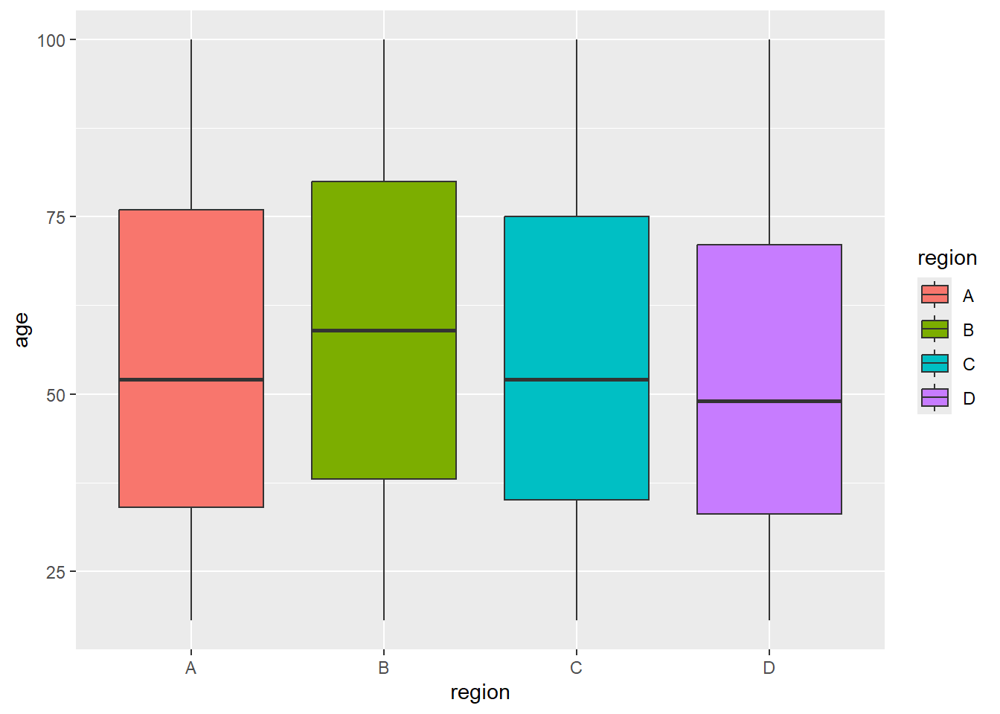
Nell’area di prova, nel grafico precedente sostituisci fill = region con color = region e confronta i due grafici.
Clicca per vedere la soluzione (provaci da solo prima!)
ggplot(data = dati_clean, mapping = aes(x = region, y = age, color = region)) +
geom_boxplot()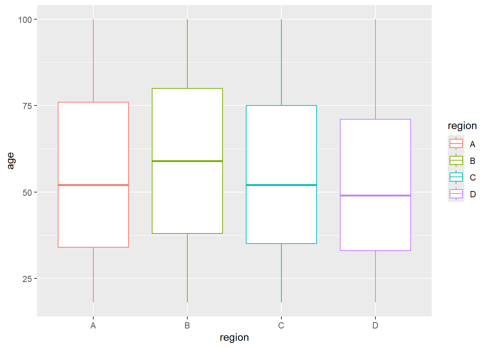
Lo spessore delle linee si regola con l’argomento linewidth. Rendi più spessi i bordi dei boxplot con linewidth = 1.2.
Clicca per vedere la soluzione (provaci da solo prima!)
ggplot(data = dati_clean, mapping = aes(x = region, y = age, color = region)) +
geom_boxplot(linewidth = 1.2)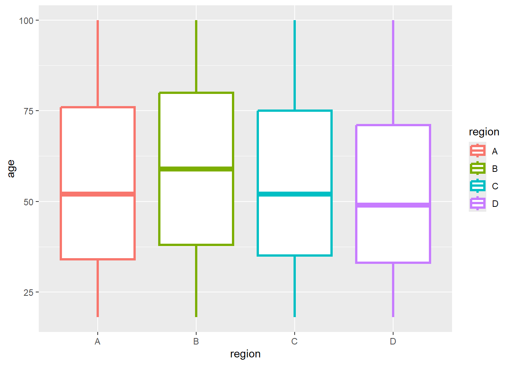
La variabile event vale 1 per le persone che hanno avuto una diagnosi di COVID-19 durante il follow-up e 0 per le altre. Nell’area di prova, rifai il grafico dello stato HIV (hiv) e del livello di anticorpi (anticorpi) con geom_jitter(width = 0.2) e colora i punti in base a event.
Clicca per vedere la soluzione (provaci da solo prima!)
# IN AREA DI PROVA
ggplot(data = dati_clean, mapping = aes(x = hiv, y = anticorpi, color = event)) +
geom_jitter(width = 0.2)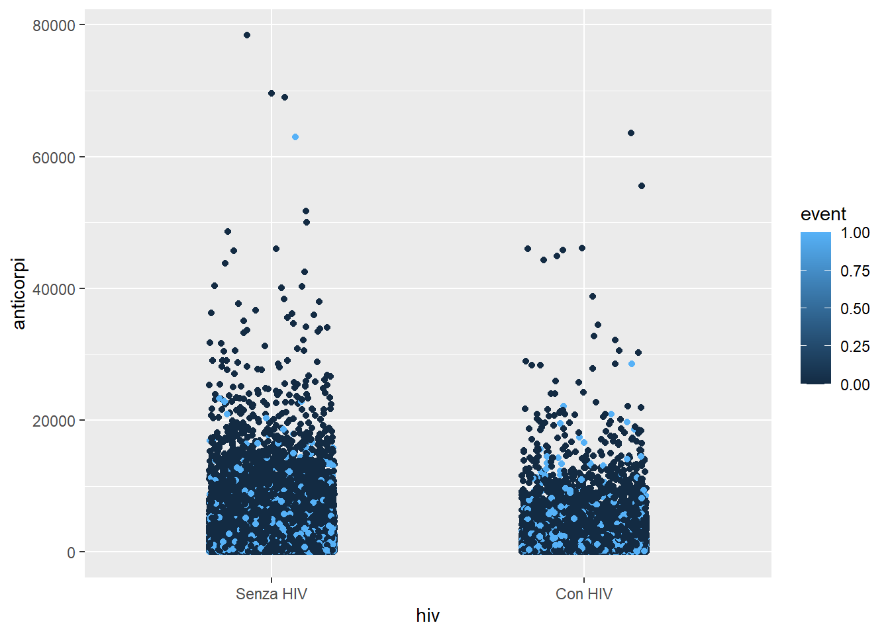
Per far capire a R che event indica due categorie serve un fattore. event indica la diagnosi di COVID-19 (date_event è la data della diagnosi): puoi procedere come nel Modulo 3 per hiv, creata da hiv_status con factor(), i livelli 0 e 1 e le etichette “Senza HIV” e “Con HIV”.
Questa variabile servirà anche dopo, quindi va nello script: sopra l’area di prova, crea una nuova sezione (Ctrl + Shift + R) chiamata “Diagnosi di COVID-19” e lì aggiungi a dati_clean, con mutate(), la variabile covid: un fattore costruito da event, con i livelli 0 e 1 e le etichette “Senza diagnosi” e “Con diagnosi”.
Clicca per leggere un suggerimento
Ricorda la sintassi di factor() vista nel Modulo 3: factor(VARIABILE, levels = c(VALORE_1, VALORE_2), labels = c("ETICHETTA_1", "ETICHETTA_2")). Per modificare dati_clean devi salvare il risultato di mutate() con l’operatore di assegnazione <-.
Clicca per vedere la soluzione (provaci da solo prima!)
# NELLO SCRIPT
# Diagnosi di COVID-19 -----------------------------------------------------
dati_clean <- dati_clean %>%
mutate(covid = factor(event,
levels = c(0, 1),
labels = c("Senza diagnosi", "Con diagnosi")))Ora, nell’area di prova, rifai il grafico usando covid per il colore. La legenda ora ha due categorie con due colori distinti. Per darle un titolo più chiaro aggiungi un livello labs(color = "Diagnosi di COVID-19"): labs() cambia le etichette del grafico e lo vedrai meglio nella prossima sezione.
Clicca per vedere la soluzione (provaci da solo prima!)
# IN AREA DI PROVA
ggplot(data = dati_clean, mapping = aes(x = hiv, y = anticorpi, color = covid)) +
geom_jitter(width = 0.2) +
labs(color = "Diagnosi di COVID-19")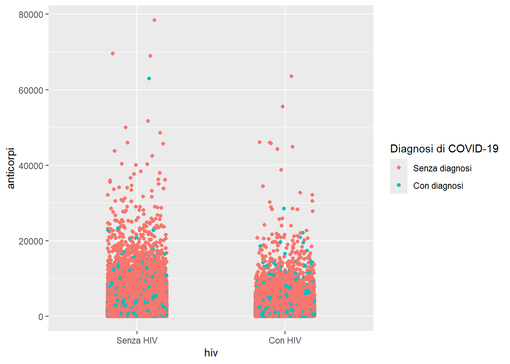
Per rendere un grafico leggibile da altri servono un titolo e nomi chiari per assi e legende. Si aggiungono con un livello labs(), che ha un argomento per ogni testo: title = e subtitle = (titolo e sottotitolo), x = e y = (i nomi degli assi), caption = (la didascalia in basso a destra) e il nome di un’estetica, per esempio fill =, per il titolo della sua legenda.
Quando il comando diventa lungo conviene scriverlo in formato “lungo”: un argomento per riga, rientrato, con un commento a destra che spiega che cosa fa. R lo esegue allo stesso modo, ma chi lo legge lo capisce molto meglio.
Questo è il grafico finale sull’età per regione, quindi va nello script: sopra l’area di prova, crea una nuova sezione (Ctrl + Shift + R) chiamata “Età per regione”. Lì riscrivi il boxplot con fill = region e aggiungi labs() con titolo, sottotitolo, etichette degli assi x e y, didascalia (caption) e titolo della legenda (fill). Scrivi il codice in formato “lungo”, un argomento per riga, con commenti.
Clicca per vedere la soluzione (provaci da solo prima!)
# Età per regione ----------------------------------------------------------
ggplot(
data = dati_clean, # coorte di vaccinati
mapping = aes(
x = region, # regione sull'asse x
y = age, # età sull'asse y
fill = region)) + # riempimento per regione
geom_boxplot() + # un boxplot per regione
labs(
title = "Età alla vaccinazione per regione",
subtitle = "Persone con e senza HIV",
x = "Regione",
y = "Età (anni)",
caption = "Grafico modulo 5",
fill = "Regione")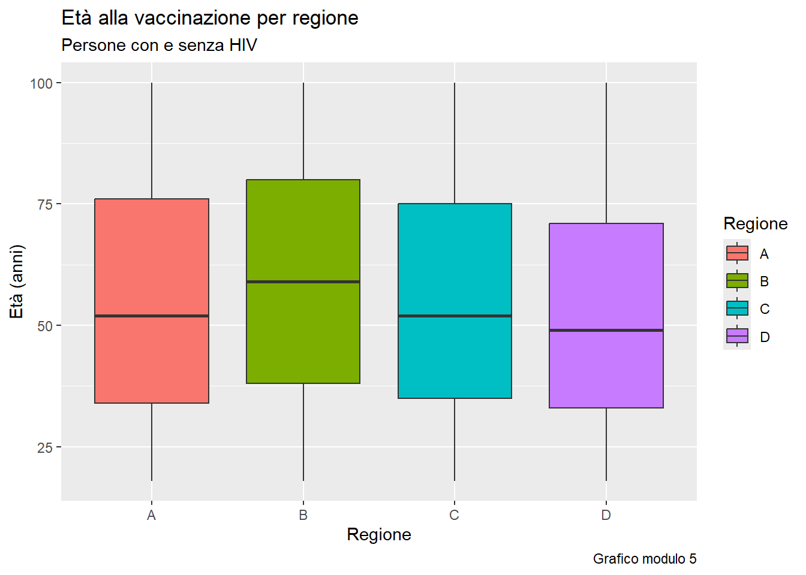
Nella Console compare un avviso: le 5 persone senza età non possono essere disegnate. Il grafico viene prodotto lo stesso; ne riparleremo con gli istogrammi.
Uno scatter plot (grafico a dispersione) mostra la relazione tra due variabili continue: ogni riga del data frame è un punto, con una variabile sull’asse x e una sull’asse y. In dati_clean ogni riga è una persona, quindi ogni punto sarà una persona.
In dati_clean c’è il livello di anticorpi di ciascuna persona dopo la vaccinazione (anticorpi). Vogliamo vedere se cambia al cambiare del valore del cd4. Nell’area di prova, crea un data frame chiamato ant_cd4_A che contiene tutti i casi con hiv pari a Con HIV, nella region A. Fai poi uno scatterplot con geom_point(), con i valori cd4 sull’asse x e il livello di anticorpi (anticorpi) sull’asse y.
Clicca per vedere la soluzione (provaci da solo prima!)
ant_cd4_A <- dati_clean %>%
filter(region == 'A' & hiv == 'Con HIV')
ggplot(data = ant_cd4_A, mapping = aes(x = cd4, y = anticorpi)) +
geom_point()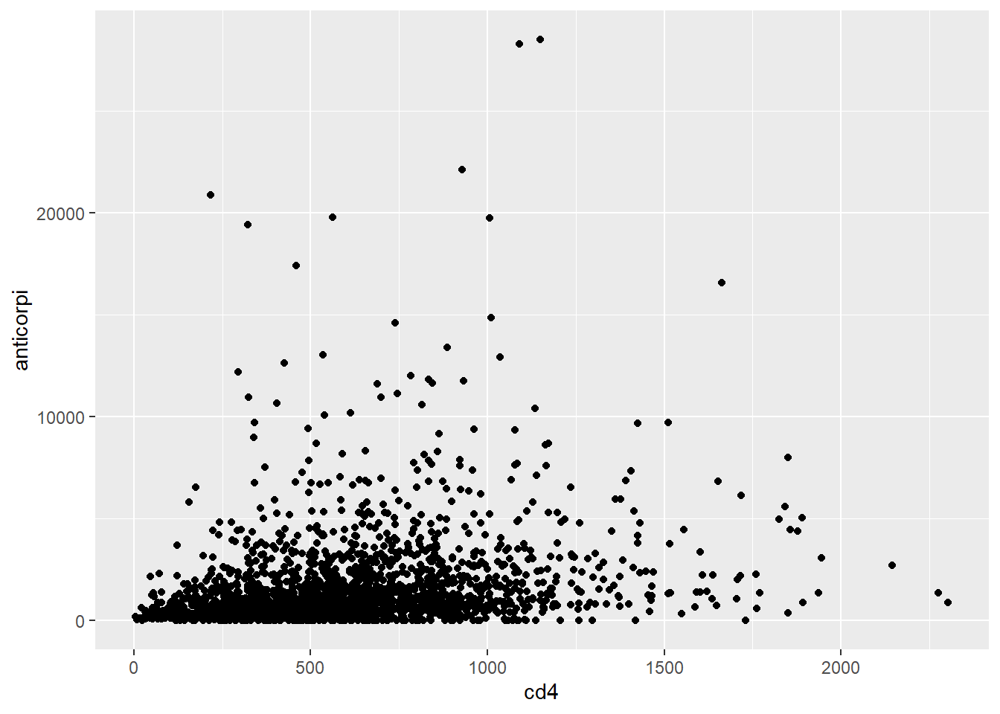
Un grafico può avere più livelli geom_, collegati con +: {ggplot2} li disegna uno sopra l’altro, nell’ordine in cui li scrivi. Con tanti punti è difficile vedere una tendenza: il livello geom_smooth() aggiunge una curva che segue l’andamento medio dei punti, con una fascia grigia che ne indica l’incertezza.
Nell’area di prova, utilizzando ancora una volta il data frame creato precedentemente (ant_cd4_A), colora i punti per stato HIV, con color = hiv dentro aes(), e aggiungi un livello geom_smooth().
Clicca per vedere la soluzione (provaci da solo prima!)
ggplot(data = ant_cd4_A, mapping = aes(x = cd4, y = anticorpi, color = hiv)) +
geom_point() +
geom_smooth()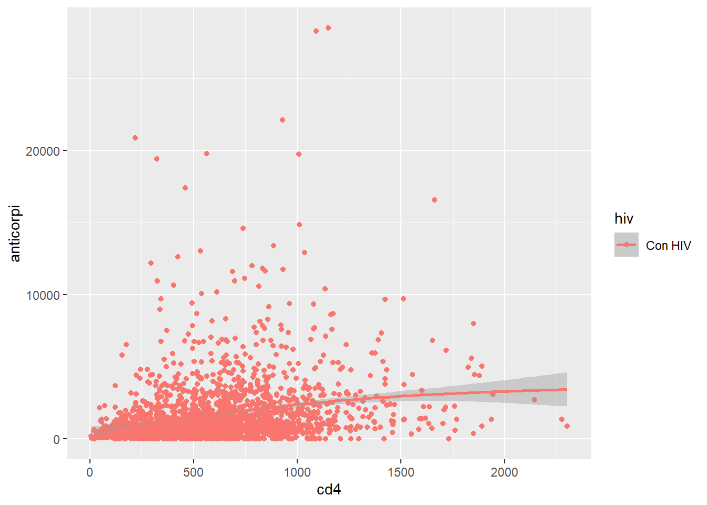
Nella Console, compare un messaggio che dice quale metodo è stato usato per calcolare la curva: è solo un’informazione, non un errore.
Nell’area di prova, sposta color = hiv da ggplot() a geom_point() e osserva che cosa cambia.
Clicca per vedere la soluzione (provaci da solo prima!)
ggplot(data = ant_cd4_A, mapping = aes(x = cd4, y = anticorpi)) +
geom_point(aes(color = hiv)) +
geom_smooth()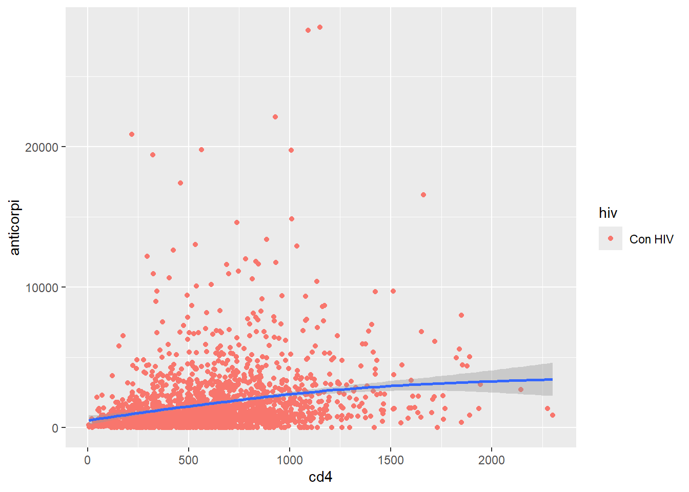
Nell’area di prova, inverti l’ordine di geom_point() e geom_smooth() e osserva che cosa cambia.
Clicca per vedere la soluzione (provaci da solo prima!)
ggplot(data = ant_cd4_A, mapping = aes(x = cd4, y = anticorpi)) +
geom_smooth() +
geom_point(aes(color = hiv)) 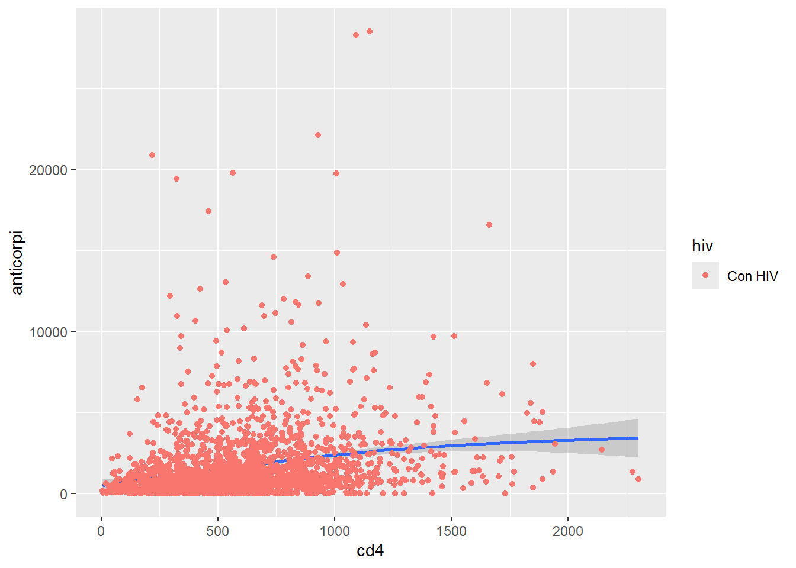
alphaI punti sono quasi 2.000 e si sovrappongono: dove sono tanti diventano una macchia uniforme, e non si capisce dove sono più fitti. L’argomento alpha regola la trasparenza, da 0 (del tutto trasparente, cioè invisibile) a 1 (del tutto coprente, il default per i punti). Funziona con quasi tutte le funzioni geom_. In geom_point() rende trasparenti i punti: dove se ne sovrappongono tanti il colore diventa più intenso. In geom_smooth() rende più o meno trasparente la fascia grigia di incertezza, non la curva.
Nell’area di prova, riparti dal grafico con color = hiv dentro ggplot() e aggiungi alpha = 0.1 dentro geom_point(), provando anche altri valori tra 0 e 1.
Clicca per leggere un suggerimento
alpha qui è un’estetica statica: un valore fisso, uguale per tutti i punti. Va quindi scritto dentro geom_point() ma fuori da aes().
Clicca per vedere la soluzione (provaci da solo prima!)
ggplot(data = ant_cd4_A, mapping = aes(x = cd4, y = anticorpi, color = hiv)) +
geom_point(alpha = 0.1) +
geom_smooth()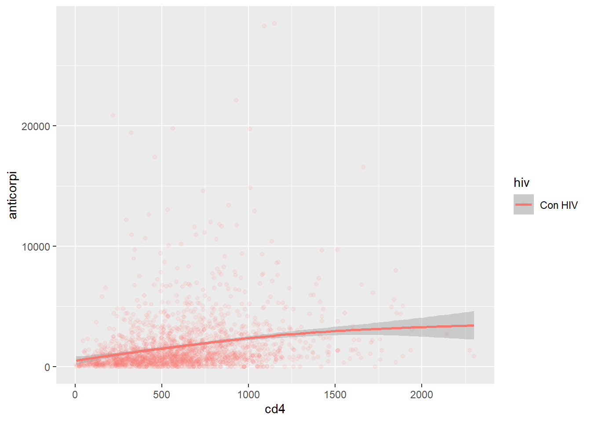
geom_bar() disegna un grafico a barre contando le righe: per ogni valore della variabile sull’asse x, l’altezza della barra è il numero di righe con quel valore. Per questo basta indicare solo x: l’asse y lo calcola geom_bar(). In dati_clean ogni riga è una persona vaccinata, quindi contare le righe di una regione vuol dire contare i suoi vaccinati.
Nell’area di prova, fai un grafico a barre del numero di vaccinati per regione con geom_bar(), specificando solo x. Poi colora tutte le barre di "lightblue".
Clicca per vedere la soluzione (provaci da solo prima!)
ggplot(data = dati_clean, mapping = aes(x = region)) +
geom_bar()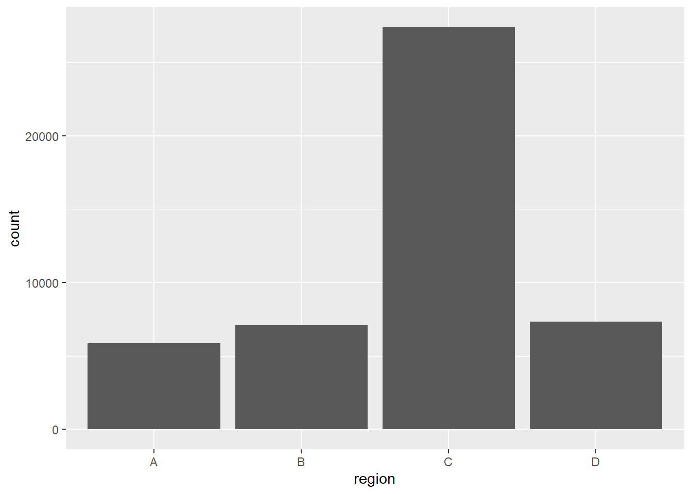
ggplot(data = dati_clean, mapping = aes(x = region)) +
geom_bar(fill = "lightblue")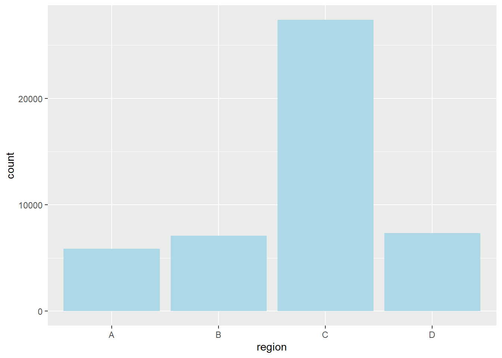
Se il riempimento dipende da una seconda variabile, ogni barra viene divisa in pezzi, uno per ogni valore di quella variabile, impilati uno sopra l’altro.
Nell’area di prova, fai variare il riempimento delle barre in base al Charlson index (chrls_index).
Clicca per vedere la soluzione (provaci da solo prima!)
ggplot(data = dati_clean, mapping = aes(x = region, fill = chrls_index)) +
geom_bar()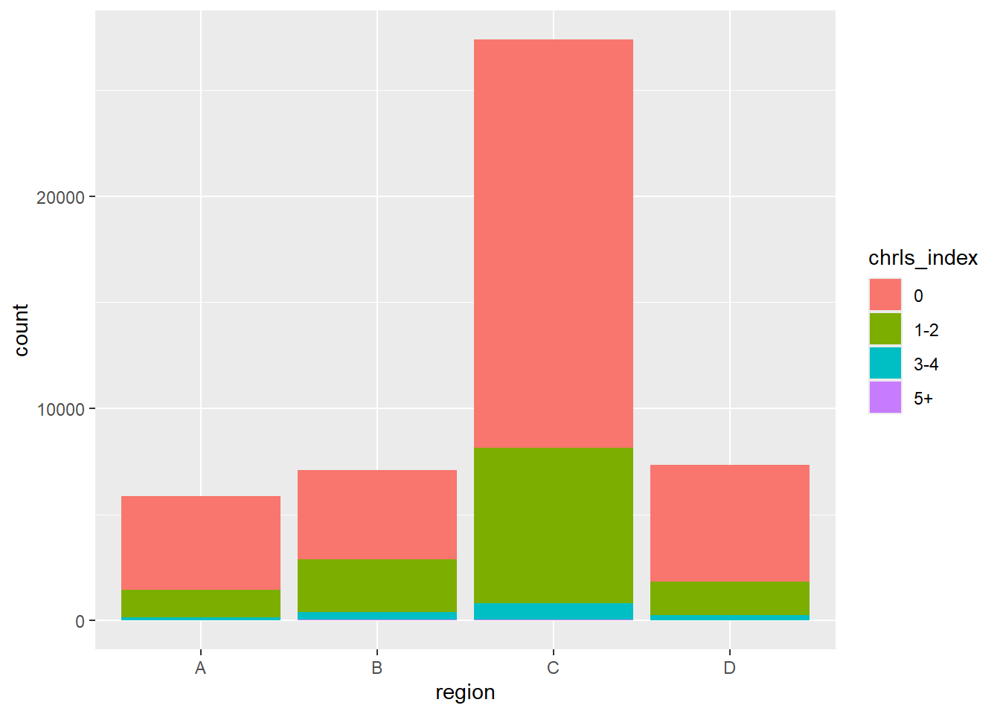
La categoria “0” finisce in cima alla pila: per averla in basso bisogna invertire l’ordine delle categorie. Lo fa la funzione fct_rev() del pacchetto {forcats}, anche questo compreso nel {tidyverse}: si scrive fct_rev(VARIABILE) al posto del solo nome della variabile.
Inverti l’ordine delle categorie in modo che la categoria “0” sia in basso.
Clicca per vedere la soluzione (provaci da solo prima!)
ggplot(data = dati_clean, mapping = aes(x = region, fill = fct_rev(chrls_index))) +
geom_bar()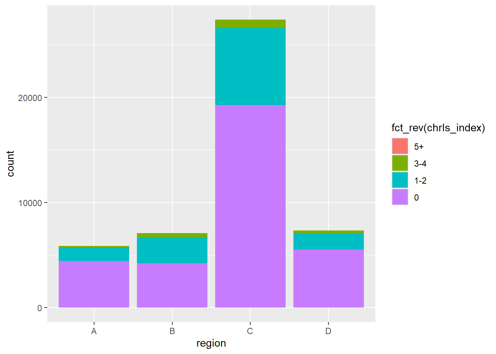
Ora fai variare il riempimento delle barre in base alla classe d’età (age_group).
Clicca per vedere la soluzione (provaci da solo prima!)
ggplot(data = dati_clean, mapping = aes(x = region, fill = age_group)) +
geom_bar()
Con le barre impilate è facile confrontare il totale delle regioni, ma è difficile confrontare tra le regioni i singoli pezzi, perché non partono tutti da zero. In questo caso si possono mettere i pezzi uno accanto all’altro invece che uno sopra l’altro.
Questo è il grafico finale sui vaccinati per classe d’età, quindi va nello script: sopra l’area di prova, crea una nuova sezione (Ctrl + Shift + R) chiamata “Vaccinati per regione e classe d’età” e lì rifai il grafico per age_group con le barre affiancate.
Clicca per leggere un suggerimento
Per affiancare le barre usa l’argomento position = "dodge" dentro geom_bar().
Clicca per vedere la soluzione (provaci da solo prima!)
# Vaccinati per regione e classe d'età -------------------------------------
ggplot(data = dati_clean, mapping = aes(x = region, fill = age_group)) +
geom_bar(position = "dodge")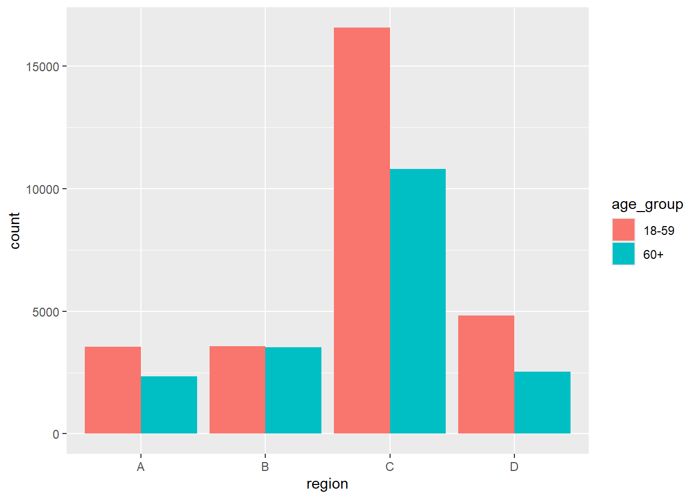
geom_col()Spesso i dati da rappresentare sono già aggregati, per esempio in una tabella con il numero di vaccinati per regione. Questo data frame servirà anche dopo, quindi va nello script: sopra l’area di prova, crea una nuova sezione (Ctrl + Shift + R) chiamata “Dati aggregati” e lì crea il data frame vaccinati_regione con il numero di vaccinati per regione (variabile n_vaccinati), usando group_by() e summarise().
Clicca per vedere la soluzione (provaci da solo prima!)
# Dati aggregati -----------------------------------------------------------
vaccinati_regione <- dati_clean %>%
group_by(region) %>%
summarise(n_vaccinati = n(), .groups = "drop")Nell’area di prova, prova prima geom_bar() su vaccinati_regione con x = region.
Clicca per vedere la soluzione (provaci da solo prima!)
ggplot(data = vaccinati_regione, mapping = aes(x = region)) +
geom_bar()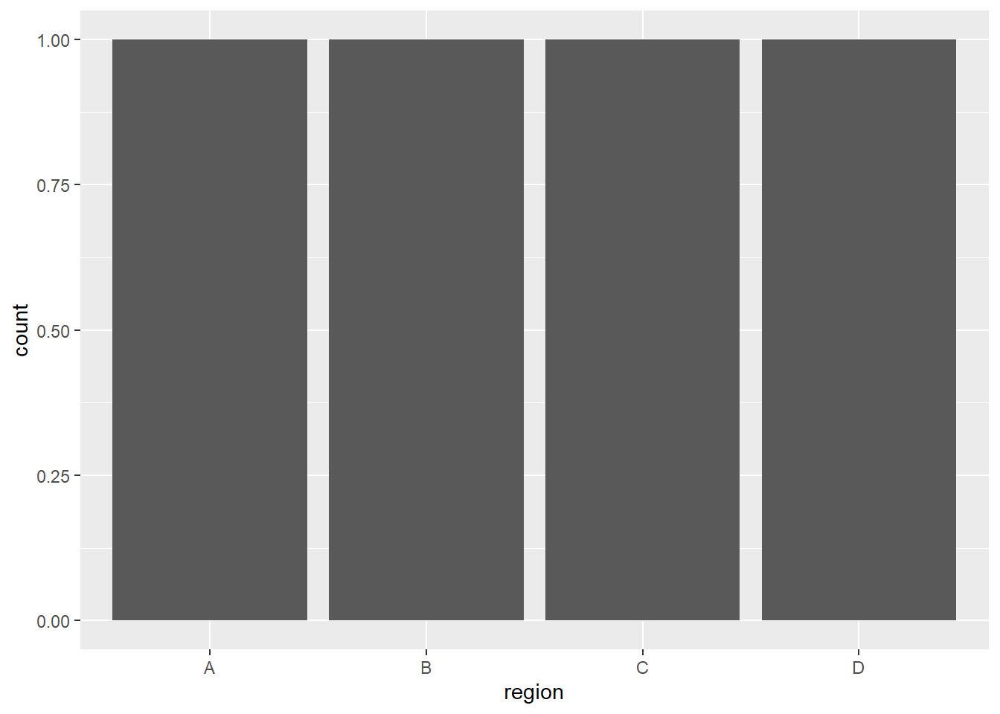
Ora fai il grafico corretto con geom_col() da inserire sopra l’area di prova, nella sezione “Dati aggregati”.
Clicca per vedere la soluzione (provaci da solo prima!)
ggplot(data = vaccinati_regione, mapping = aes(x = region, y = n_vaccinati)) +
geom_col()L’istogramma mostra la distribuzione di una variabile continua, come un’età o una data: divide i valori in intervalli e per ogni intervallo disegna una barra alta quanto il numero di righe che vi cadono. A differenza del grafico a barre, le barre sono attaccate, perché gli intervalli sono uno di seguito all’altro. Si fa con geom_histogram(), indicando solo x.
Nell’area di prova, fai un istogramma della data di vaccinazione (date_vacc) con le barre di colore "darkgreen".
Clicca per vedere la soluzione (provaci da solo prima!)
ggplot(data = dati_clean, mapping = aes(x = date_vacc)) +
geom_histogram(fill = "darkgreen")
Poi ripeti con la data dell’evento (date_event).
Clicca per vedere la soluzione (provaci da solo prima!)
ggplot(data = dati_clean, mapping = aes(x = date_event)) +
geom_histogram(fill = "darkgreen")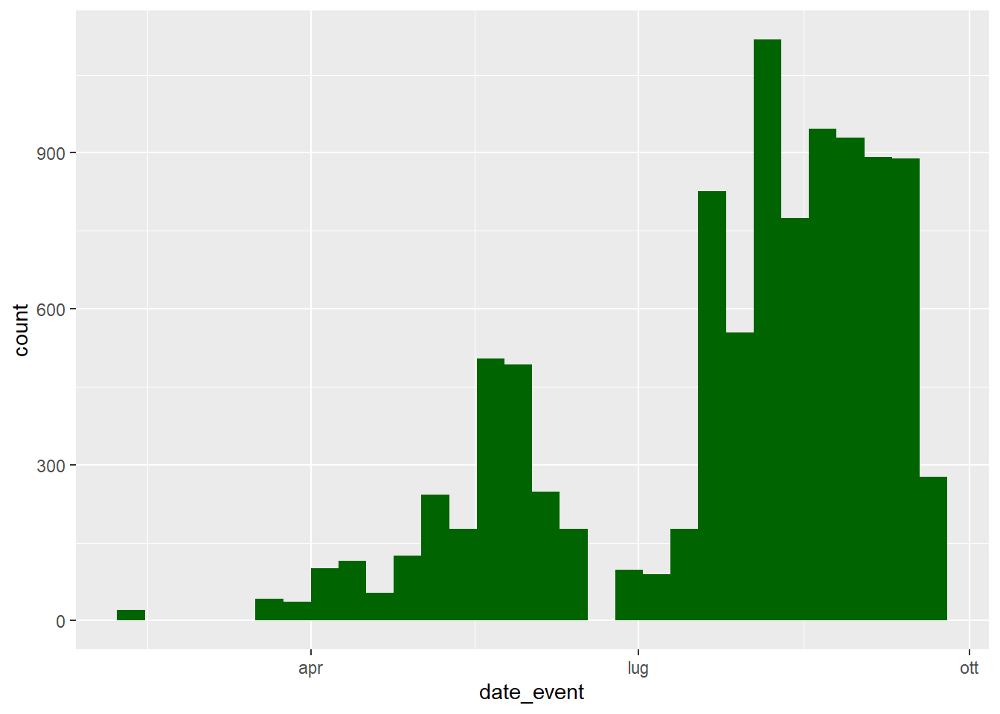
Nell’area di prova, fai un istogramma dell’età (age) con riempimento per sesso (sex).
Clicca per vedere la soluzione (provaci da solo prima!)
ggplot(data = dati_clean, mapping = aes(x = age, fill = sex)) +
geom_histogram()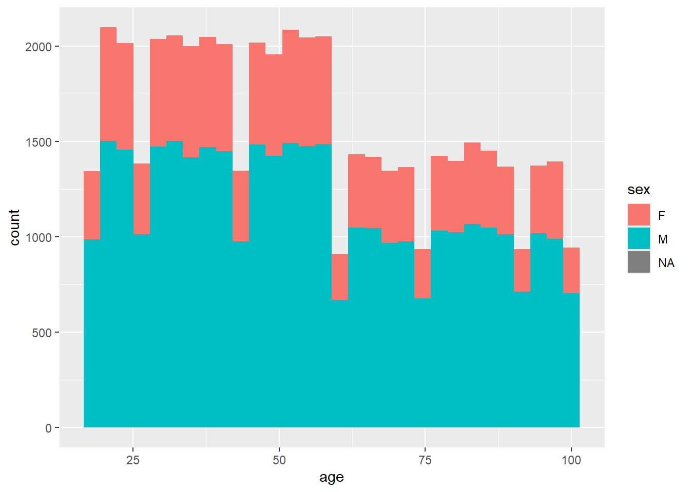
In legenda, oltre a F e M, compare NA: sono le 2 persone con il sesso mancante, che {ggplot2} disegna in grigio (le loro barre sono così basse da non vedersi). Nel Modulo 6 vedrai come sceglierne il colore.
Di default geom_histogram() divide i valori in 30 intervalli e nella Console ti suggerisce di sceglierne un numero migliore. Lo puoi fare in due modi, dentro geom_histogram():
bins = indica quante barre disegnare;binwidth = indica quanto è largo ogni intervallo, nell’unità della variabile (per l’età, in anni).Prova, uno alla volta, bins = 100, bins = 5 e binwidth = 5 dentro geom_histogram().
Clicca per vedere la soluzione (provaci da solo prima!)
# bins = 100
ggplot(data = dati_clean, mapping = aes(x = age, fill = sex)) +
geom_histogram(bins = 100)
# bins = 5
ggplot(data = dati_clean, mapping = aes(x = age, fill = sex)) +
geom_histogram(bins = 5)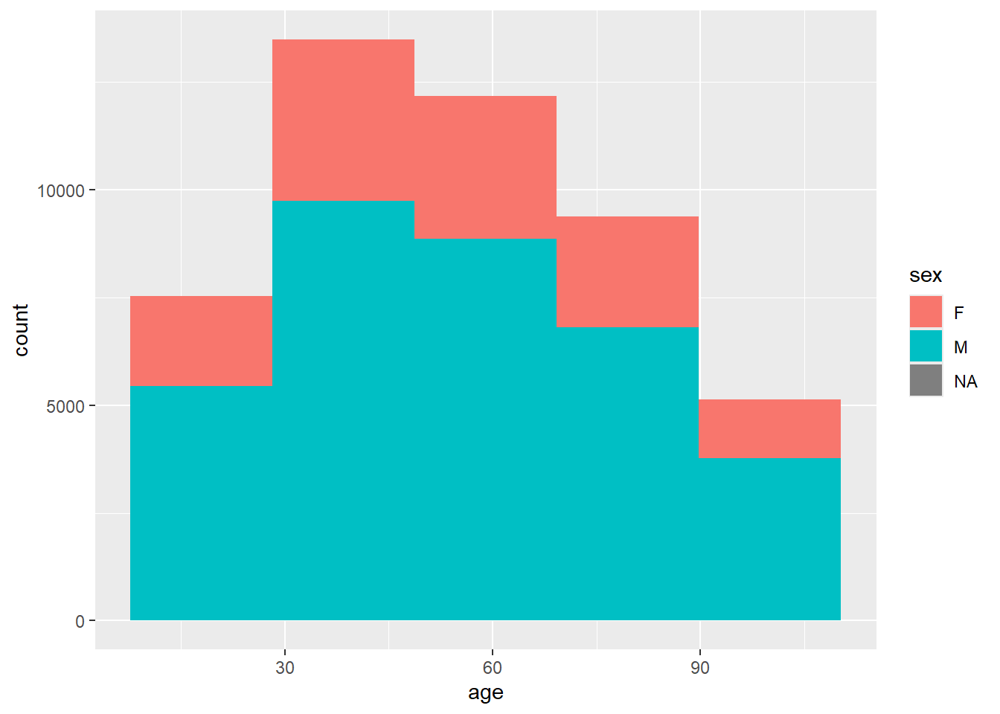
# binwidth = 5
ggplot(data = dati_clean, mapping = aes(x = age, fill = sex)) +
geom_histogram(binwidth = 5)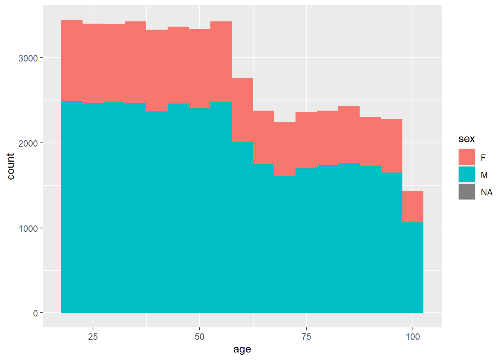
Le etichette di un asse con le date si regolano con un livello scale_x_date(), che ha due argomenti utili:
date_breaks = indica ogni quanto mettere un’etichetta, per esempio "1 month" (una al mese) o "2 weeks";labels = indica come scriverle. La funzione scales::label_date() prende un formato e una lingua (locale =, per esempio "it" per l’italiano).Il formato si scrive con dei codici: %d è il giorno, %m il mese in numero, %b il mese abbreviato (“gen”), %B il mese per esteso (“gennaio”) e %Y l’anno a quattro cifre.
scale_x_date(
date_breaks = "1 month",
labels = scales::label_date("FORMATO", locale = "it"))Sopra l’area di prova crea una nuova sezione (Ctrl + Shift + R) chiamata “Istogramma” e rifai l’istogramma di date_vacc con barre di 7 giorni (binwidth = 7), di colore "darkgreen" ed etichette dell’asse x in italiano, una per mese, nel formato “gen 2021”.
Clicca per leggere un suggerimento
Usa scale_x_date() con gli argomenti date_breaks = e labels = scales::label_date(..., locale = "it").
Clicca per vedere la soluzione (provaci da solo prima!)
# Istogramma -------------------------------------------------------
ggplot(data = dati_clean, mapping = aes(x = date_vacc)) +
geom_histogram(binwidth = 7, fill = "darkgreen") +
scale_x_date(
date_breaks = "1 month",
labels = scales::label_date("%b %Y", locale = "it"))
Nell’area di prova, produci lo stesso grafico anche con i formati "%B %Y" e "%d %b".
Clicca per vedere la soluzione (provaci da solo prima!)
# italiano con %B %Y
ggplot(data = dati_clean, mapping = aes(x = date_vacc)) +
geom_histogram(binwidth = 7, fill = "darkgreen") +
scale_x_date(
date_breaks = "1 month",
labels = scales::label_date("%B %Y", locale = "it"))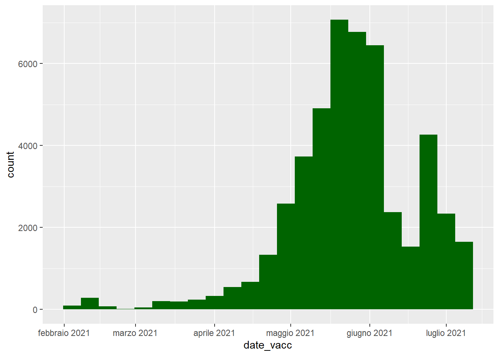
# italiano con %d %b
ggplot(data = dati_clean, mapping = aes(x = date_vacc)) +
geom_histogram(binwidth = 7, fill = "darkgreen") +
scale_x_date(
date_breaks = "1 month",
labels = scales::label_date("%d %b", locale = "it"))A volte conviene dividere un grafico in tanti piccoli grafici, uno per ogni valore di una variabile, con gli stessi assi. Lo fa il livello facet_wrap(): dentro si scrive il simbolo tilde ~ seguito dal nome della variabile.
facet_wrap(~ VARIABILE)Con la tastiera italiana la tilde non ha un tasto suo: su Windows tieni premuto Alt e digita 126 sul tastierino numerico; su Mac usa Option + 5.
Nell’area di prova, partendo dall’istogramma di date_vacc con barre di 7 giorni, crea un pannello per regione con facet_wrap().
Clicca per vedere la soluzione (provaci da solo prima!)
ggplot(data = dati_clean, mapping = aes(x = date_vacc)) +
geom_histogram(binwidth = 7) +
facet_wrap(~ region)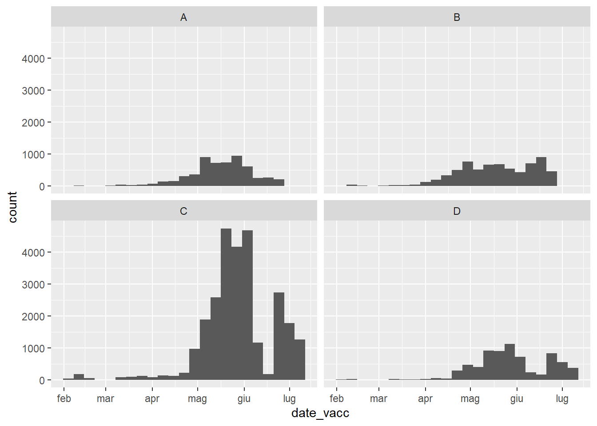
Sopra l’area di prova, crea una nuova sezione (Ctrl + Shift + R) chiamata “Riquadri facet”; poi ripeti il facet con un pannello per hiv.
Clicca per vedere la soluzione (provaci da solo prima!)
# Riquadri facet -------------------------------------------------------
ggplot(data = dati_clean, mapping = aes(x = date_vacc)) +
geom_histogram(binwidth = 7) +
facet_wrap(~ hiv)
Un grafico si può salvare in un oggetto, come un data frame, con <-: in questo caso non compare nel pannello Plots, ma puoi vederlo eseguendo il nome dell’oggetto. Questo grafico va nello script: sopra l’area di prova, crea una nuova sezione (Ctrl + Shift + R) chiamata “Salvare il grafico”. Qui ricrea il data frame ant_cd4_A e salva nell’oggetto scatter_anticorpi lo scatter plot di CD4 e anticorpi con i colori per stato HIV, alpha = 0.1 e geom_smooth(), aggiungendo le etichette con labs().
Clicca per vedere la soluzione (provaci da solo prima!)
# Salvare il grafico -------------------------------------------------------
ant_cd4_A <- dati_clean %>%
filter(region == 'A' & hiv == 'Con HIV')
scatter_anticorpi <- ggplot(data = ant_cd4_A, mapping = aes(x = cd4, y = anticorpi, color = hiv)) +
geom_point(alpha = 0.1) +
geom_smooth() +
labs(
title = "Livello di anticorpi per età",
x = "CD4",
y = "Livello di anticorpi",
color = "Stato HIV")
scatter_anticorpiPer salvare il grafico in un file si usa ggsave(), con questi argomenti:
plot =, l’oggetto con il grafico;filename =, il percorso e il nome del file, tra virgolette: l’estensione (.png, .pdf, .jpg) decide il formato;width = e height =, larghezza e altezza;dpi =, la risoluzione (300 va bene per la stampa).ggsave(plot = OGGETTO, filename = "CARTELLA/NOME_FILE.png", width = LARGHEZZA, height = ALTEZZA, dpi = 300)Sotto scatter_anticorpi, esporta il grafico con ggsave() nella cartella output come file PNG di 10 × 6 pollici a 300 dpi e chiamalo “scatter_anticorpi.png”.
Clicca per vedere la soluzione (provaci da solo prima!)
ggsave(
plot = scatter_anticorpi,
filename = "output/scatter_anticorpi.png",
width = 10,
height = 6,
dpi = 300)Ecco come dovrebbe essere il tuo script per questa esercitazione: contiene solo gli oggetti da conservare, mentre le prove restano nell’area di prova. Confrontalo con il tuo: i commenti e alcuni dettagli possono essere diversi, ma i comandi devono fare le stesse cose. Lo script completo dei Moduli 5, 6 e 8 lo trovi anche nella cartella script/backup, nel file backup_plot.R.
Clicca per vedere lo script completo
### Corso introduttivo a R
### Obiettivo: grafici con ggplot2 (Moduli 5, 6 e 8)
### Autore: Marco Rossi
### Data di creazione: 2 dicembre 2026
### Contatto: marco.rossi@iss.it
# Caricamento pacchetti ---------------------------------------------------
pacman::p_load(
rio, # importazione ed esportazione dei dati
skimr, # panoramica dei dati
janitor, # pulizia dei dati e tabelle
lubridate, # lavorare con le date
epikit, # classi di età
gtsummary, # tabelle descrittive
flextable, # tabelle da presentare
tidyverse # gestione e visualizzazione dei dati
)
# Importazione dati -------------------------------------------------------
dati_clean <- import("materiali_corso_R/dati/dati_clean.rds")
# Modulo 05 - Data Visualization con ggplot2 (Parte 1) =====================
# Diagnosi di COVID-19 -----------------------------------------------------
dati_clean <- dati_clean %>%
mutate(covid = factor(event,
levels = c(0, 1),
labels = c("Senza diagnosi", "Con diagnosi")))
# Età per regione ----------------------------------------------------------
ggplot(
data = dati_clean, # coorte di vaccinati
mapping = aes(
x = region, # regione sull'asse x
y = age, # età sull'asse y
fill = region)) + # riempimento per regione
geom_boxplot() + # un boxplot per regione
labs(
title = "Età alla vaccinazione per regione",
subtitle = "Persone con e senza HIV",
x = "Regione",
y = "Età (anni)",
caption = "Grafico modulo 5",
fill = "Regione")
# Vaccinati per regione e classe d'età -------------------------------------
ggplot(data = dati_clean, mapping = aes(x = region, fill = age_group)) +
geom_bar(position = "dodge")
# Dati aggregati -----------------------------------------------------------
vaccinati_regione <- dati_clean %>%
group_by(region) %>%
summarise(n_vaccinati = n(), .groups = "drop")
ggplot(data = vaccinati_regione, mapping = aes(x = region, y = n_vaccinati)) +
geom_col()
# Istogramma ---------------------------------------------------------------
ggplot(data = dati_clean, mapping = aes(x = date_vacc)) +
geom_histogram(binwidth = 7, fill = "darkgreen") +
scale_x_date(
date_breaks = "1 month",
labels = scales::label_date("%b %Y", locale = "it"))
# Riquadri facet -----------------------------------------------------------
ggplot(data = dati_clean, mapping = aes(x = date_vacc)) +
geom_histogram(binwidth = 7) +
facet_wrap(~ hiv)
# Salvare il grafico -------------------------------------------------------
ant_cd4_A <- dati_clean %>%
filter(region == 'A' & hiv == 'Con HIV')
scatter_anticorpi <- ggplot(data = ant_cd4_A, mapping = aes(x = cd4, y = anticorpi, color = hiv)) +
geom_point(alpha = 0.1) +
geom_smooth() +
labs(
title = "Livello di anticorpi per età",
x = "CD4",
y = "Livello di anticorpi",
color = "Stato HIV")
scatter_anticorpi
ggsave(
plot = scatter_anticorpi,
filename = "output/scatter_anticorpi.png",
width = 10,
height = 6,
dpi = 300){ggplot2} si costruisce per strati (layers) collegati con +: dati (ggplot()), estetiche (aes()) e geom (geom_*()). Il + va alla fine della riga, non all’inizio della successivaaes(); estetiche statiche (un valore fisso) dentro il geomhiv creata nel Modulo 3 e covid creata in questo modulo da eventgeom_bar() conta le righe; geom_col() usa valori già aggregatigeom_jitter() e geom_boxplot() confrontano una variabile continua tra gruppi; geom_point() mostra la relazione tra due variabili e geom_smooth() ne aggiunge la tendenza; geom_histogram() mostra la distribuzione di una variabilegeom_ si sovrappongono nell’ordine in cui sono scritti. Le estetiche dentro ggplot() valgono per tutti i livelli, quelle dentro un geom (mapping = aes()) solo per quel livelloalpha regola la trasparenza, da 0 (invisibile) a 1 (coprente): serve quando molti punti si sovrappongonolabs() per le etichette, facet_wrap() per i pannelli, scale_x_date() con scales::label_date(locale = "it") per le date in italiano, ggsave() per salvare{ggplot2}: https://ggplot2.tidyverse.org/reference/{ggplot2}: https://rstudio.github.io/cheatsheets/html/data-visualization.html